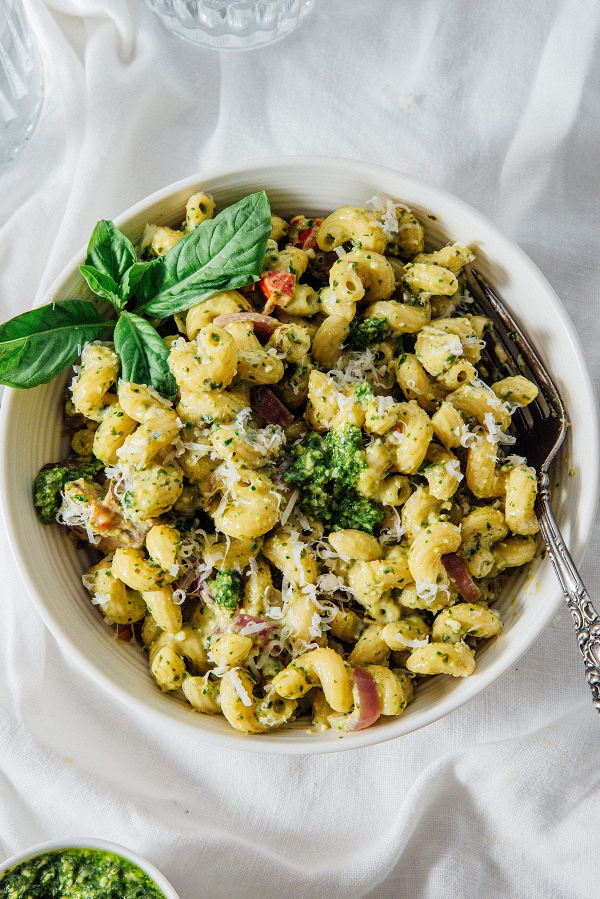

Cavatappi Pasta with Cream Pesto Recipe

Description
Inspired by Noodles & Company pesto pasta, this cavatappi pasta recipe has the same delicious taste but is so easy to make. Even using homemade pesto for extra bright and bold flavor, the dish comes together in 20 minutes. It packs in lots of vegetables with a smooth cream sauce making it a vegetarian pasta lover’s dream!
Ingredients
- Unsalted butter
- Cavatappi pasta
- Button mushrooms
- Roma tomatoes
- Red onion
- Extra veggies to throw in - broccoli, spinach, asparagus, sun-dried tomatoes, peas or zucchini!
- Pesto, heavy cream and parmesan cheese for the sauce
Preparation Steps
- Cook the pasta according the package's al dente instructions
- Make the flavor base by sautéing vegetables
- Sauce it up by adding the pesto and cream
- Top with parmeson and serve!